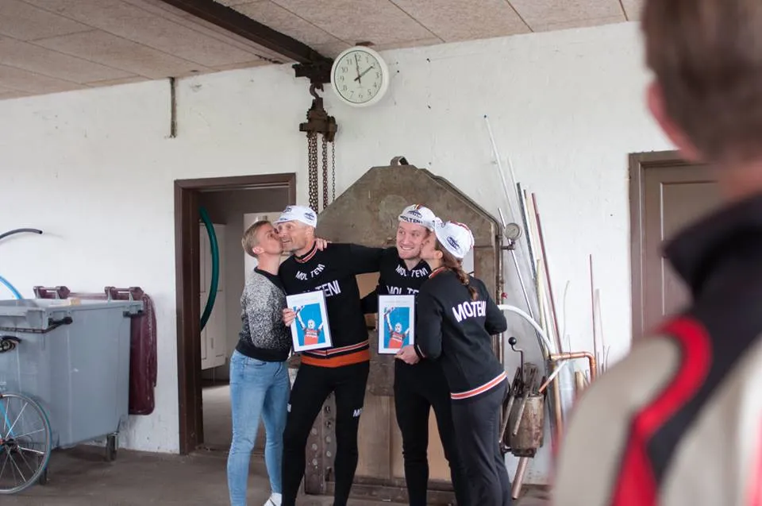
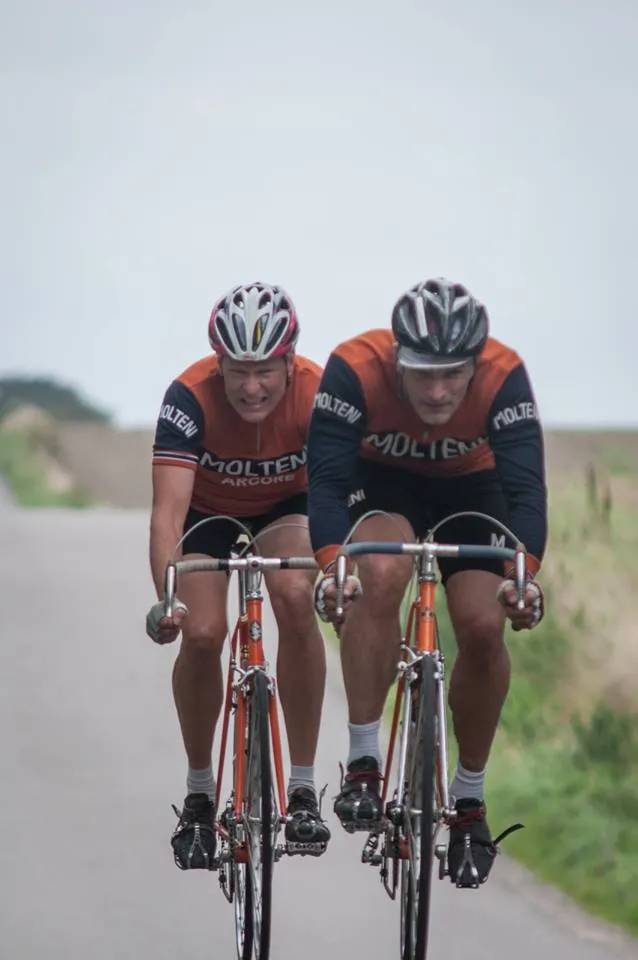
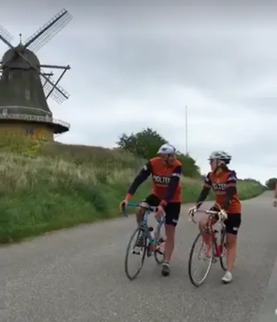

Trofeo Molteni

Squadra Molteni stillede til start med 3 par ved første årgang af “Trofeo Molteni” – et 50 km partidskørselsløb på Hindsholm, nord for Kerteminde. Kaptajn Bjørnsteen og løjtnant Sørensen kørte en sejr hjem i 1970’er-klassen.
9 hold havde fundet vej til Hindsholm nord for Kerteminde, for at køre Trofeo Molteni. Squadra Molteni stillede op med 3 par: Kaptajn Bjørnsteen/løjtnant Sørensen, Per Sandahl /Maria Winther og Grane Maaløe/Carsten Jacobsen.

Kaptajn Bjørnsteen og løjtnant Sørensen udraderede Morten Mejsen/Pelle Clemmesen fra Team Peugeot Re-Cycled – og vandt dermed 1970’er-klassen. Grane Maaløe/Carsten Jacobsen fik en ærefuld 3. plads i samme klasse.

Per Sandahl /Maria Winther kom godt fra start – men ude på ruten løb de ind i store udfordringer. Per tabte bla. sin reserve-ring, hvilke kostede parret i omegnen af 8 minutter – men de gennemførte i bedste stil.

Forza Squadra Molteni